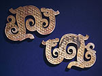
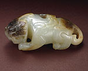
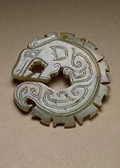

|
|
7000 Years Of Chinese
Jade: from the collection of Sir Joseph Hotung “Soft smooth and glossy, it appeared to them like benevolence; fine, compact and strong – like intelligence” Attributed to Confucius (c. 551-479 BC). Jade has always been the material of the highest value to the Chinese. From very ancient times, this extremely tough translucent stone has been worked into ornaments, ceremonial weapons and ritual objects. Recent exciting archaeological finds in many parts of China have revealed not only the antiquity of the skill of jade carving, but also the extraordinary levels of development it achieved at a very early date. This exhibition illustrates the history of jade use in China from c. 5000 BC to the modern day. Over two hundred superb jades, the majority from the collection of Sir Joseph Hotung, display the subtle variety of colours and textures of this exotic stone, while demonstrating the many different types of carving, ranging from long, smooth Neolithic blades to later plaques, ornaments, dragons, animal and human sculpture and intricate 18th century pendants. Jade, beautiful and indestructible, has acquired a mysterious presence through its many different uses over the centuries. Most highly prized by the elite of ancient China, it was worn by kings and nobles in both life and death and linked with their powers supposed and imaginary. As jade was powerful in life, it came to be regarded as powerful in death, protecting the body from decay. In later times these magical properties were perhaps less explicitly recognised, jade being valued more for its use in exquisite ornaments and vessels, and for its links with antiquity. Ancient jade shapes and decorative patterns were often copied in the Ming and Qing periods, thereby bringing the association of the distant past to the Chinese peoples of later times. A fully comprehensive catalogue, “Chinese Jade from the Neolithic to the Qing”, by Jessica Rawson, originally published 1995, will be reprinted by British Museum Press, priced £50. For further information please contact the Press Office on 020 7323 8522/ 8583 or email media@thebritishmuseum.ac.uk
|
 Pair
of Dragon shaped pendants  Crouching
Animal  Dragon
pendant
|
||
|
|
|||